Le grand corps. |
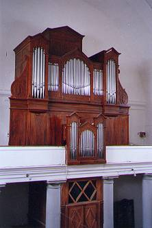 La façade du Grand-Orgue comporte cinq plates-faces de respectivement 5-9-23-9-5 tuyaux. Un positif postiche cache l'organiste. Il compte 3 plates faces de 5-13-5 tuyaux. Des moulures agencent le tout de manière très sobre.
Tout le buffet de l'orgue est en sapin peint « faux bois ». La peinture n'est pas d'origine ; lors de la restauration de 1992, Laurent PLET a retrouvé la signature du peintre FREGEIROLLE sur le plafond de l'instrument (cf. l'historique).
On observe que Beaucourt et Voegeli ne craignaient pas d'utiliser de grandes surfaces de bois sans assemblages. Ainsi, tout le buffet est composé de grands panneaux en sapin, pratique courante en Allemagne, qui n'est pas sans inconvénient sous nos latitudes ensoleillées où la différence de température et d'hygrométrie entre l'été et l'hivers est infiniment supérieure à celle des pays nordiques. La qualité du sapin employée pour le buffet est loin d'être excellente, mais le choix des bois fut particulièrement judicieux car, encore aujourd'hui, il ne comporte aucune trace de piqûre d'insectes.
Les plafonds du buffet sont, comme le reste, en sapin. Il apparaissent posés sans trop de souci de solidité. Pourtant, afin de maintenir une obscurité totale dans l'instrument et que le matériel intérieur soit totalement protégé de la poussière, une bande de drap noir est encollée sur le bois au niveau de chaque jointure.
| 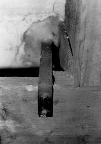 |
|
|
| Patte scellée au mur et vissée à l'orgue. |
Lors de la conception de l'instrument, Beaucourt et Voegeli ont pensé à prévoir la place que prendrait le futur Récit. Celui-ci devait être logé dans une grande tourelle (sans façade) située au dessus de la grande plate-face centrale. La restauration de 1992 à permis d'occuper cette place afin d'y loger un Récit de 42 notes.
|
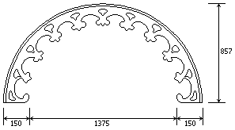 Claire voie centrale du grand corps de buffet. |
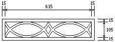 Claire-voie des petites plates-faces du grand corps de buffet. L'épaisseur de celle-ci est de 15 mm. |
|
|
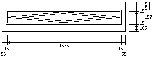 Panneau posé sous la plate-face centrale du grand corps de buffet. Le cadre intérieur est dessiné par quatre baguettes semi-circulaires collées sur le panneau ; le losange intérieur est dessiné de la même manière mais à l'aide de baguettes carrées de section 20 × 5 mm. |
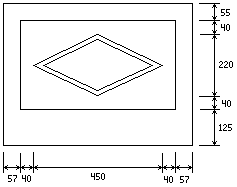 Panneau posé sous chaque petite plate-face du grand corps de buffet. Le losange intérieur est dessiné par quatres baguettes semi-circulaires de 5 mm. d'épaisseur collées sur le panneau. |
|
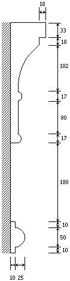 Profil de moulure de la ceinture d'entablement de l'instrument. |
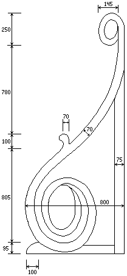 Panneau en forme de console de la jouée du côté C ; celle du côté C# est à la symétrie. |
Les moulures des chapeaux du grand corps de buffet sont probablement identiques à celles de son entablement ; je n'ai pu vérifier cette affirmation faute d'avoir une échelle assez haute pour pouvoir faire le relevé de leur profil. Celui-ci n'a pas été relevé non plus lors de la restauration de 1992.
|
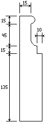 Profil de moulure du piétement de chaque montant du grand corps. |
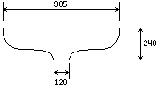 Cul de lampe posé en dessous de l'entablement sous chaque tourelle extérieure du grand corps de buffet (vue de face). |
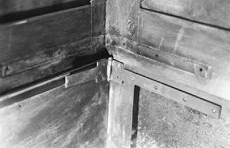 Charnière de la jouée C et trace
d'une ancienne ferrure de fixation.Le panneau rectangulaire de la jouée côté C est articulé par deux charnières en fer posées au niveau du soubassement de manière à pouvoir être repliées sur le buffet pour donner plus de place à une chorale éventuelle. Le système date probablement du début du siècle car aucune personne consultée à St-Hippolyte ne se souvient de son installation. Les charnières sont très mal posées (voir photo). Pour ce qui est de la jouée du côté C#, elle est dans son état d'origine et ses ferrures n'ont pas été modifiées.
Une plinthe de finition est posée au niveau du sol sur tout le tour de l'instrument. Certaines parties de cette plinthe, manquantes, ont été reconstituées lors de la restauration de 1992.
| 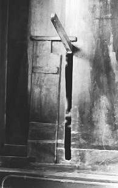 | 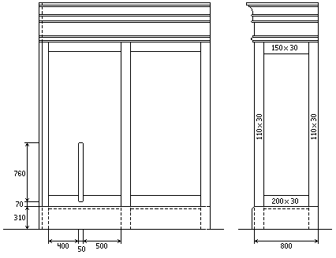 |
|
Emplacement de la mortaise du levier de pompage sur le
côté C# de l'orgue. À droite : Panneau droit d'une jouée (côté C) |
|
|---|---|
| 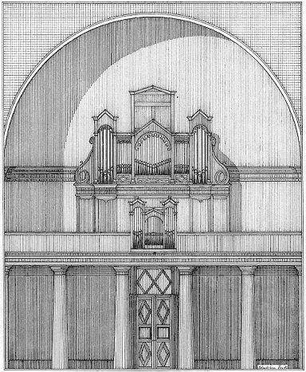 | Vue géométrale de l'instrument dans le bâtiment. |